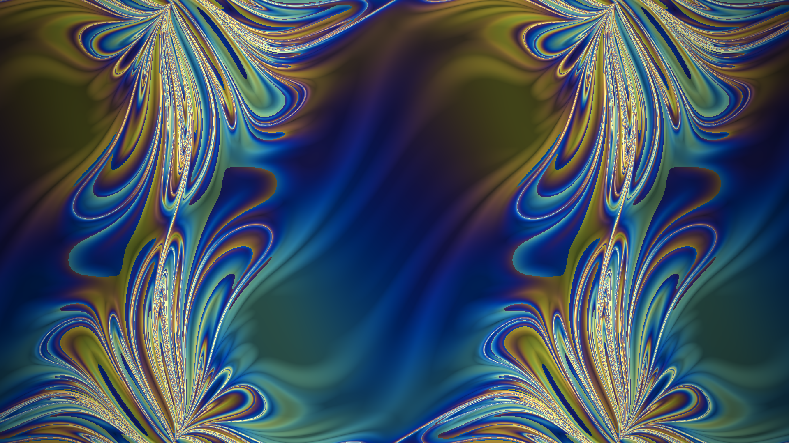
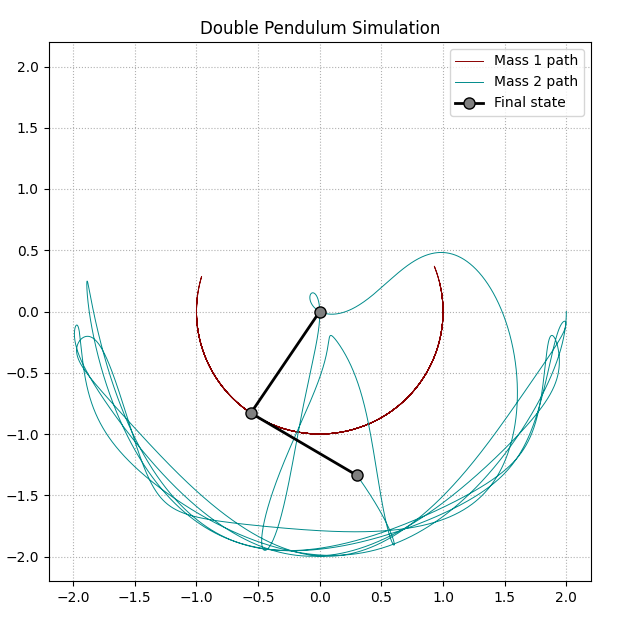

Flip time for a grid of starting angles--- how long the pendulum runs before its outer arm swings over the top.Simulating the Double Pendulum An examination of chaos through the lens of Lagrangian mechanics.In the last article, we looked at the formulation of Lagrangian mechanics--- why everything works the way it does, and how to apply it to systems for which Newtonian mechanics is ersatz, like the single pendulum. In this article, we'll take it up a notch, and we'll examine instead the double pendulum.
As a quick recap, let's recall the methodology for using Lagrangian mechanics. We first define the Lagrangian ($L$):
$$L=T-V,$$
where $T$ is the system's kinetic energy and $V$ is its potential energy. Hamilton's principle states that the actual trajectory of a system satisfies that its action value does not change when the path is slightly altered. A system's action can be defined as a function of a variable $\epsilon$ which indexes every possible trajectory $x_\epsilon(t)$. The trajectory's action is then
$$S[x_\epsilon(t)]=\int_{t_1}^{t_2}L\ dt.$$
For an actual trajectory, this unchanging action value can be described with
$$\boxed{\left.\frac{dS}{d\epsilon}\right|_{\epsilon=0}=0}.$$
Let's now look at modeling the double pendulum with this in mind.
Finding the LagrangianOur double pendulum has two moving masses (the bobs at the end of each arm) which each have their own kinetic and potential energies. We will fix the system to the origin such that the position of the first mass is defined as
$$x_1(\theta_1)=\ell_1\sin\theta_1,\ \ y_1(\theta_1)=-\ell_1\cos\theta_1.$$
We can then do the same for the second mass, which can be thought of as its own single pendulum affixed to the first mass instead of to the origin. Thus, its position is
$$\begin{aligned} x_2(\theta_1, \theta_2)&=x_1(\theta_1)+\ell_2\sin\theta_2 \\ &=\ell_1\sin\theta_1+\ell_2\sin\theta_2 \\ \\ y_2(\theta_1,\theta_2)&=y_1(\theta_1)-\ell_2\cos\theta_2 \\ &=-\ell_1\cos\theta_1-\ell_2\cos\theta_2. \end{aligned}$$
We then calculate individually each mass' potential energy
$$\begin{aligned} V_1&=m_1gy_1(\theta_1)=-m_1g\ell_1\cos\theta_1 \\ V_2&=m_2gy_2(\theta_1,\theta_2)=-m_2g\left(\ell_1\cos\theta_1+\ell_2\cos\theta_2\right) \end{aligned}$$
and their velocities
$$\begin{aligned} v_1^2&=\dot x_1^2+\dot y_1^2=\left(\ell_1\cos\theta_1\dot\theta_1\right)^2+\left(\ell_1\sin\theta_1\dot\theta_1\right)^2 \\ &=\ell_1^2\dot\theta_1^2(\cos^2(\theta_1)+\sin^2(\theta_1) \\ &=\boxed{\ell_1^2\dot\theta_1^2} \\ \\ v_2^2&=\left(\ell_1\cos\theta_1\dot\theta_1+\ell_2\cos\theta_2\dot\theta_2\right)^2+\left(\ell_1\sin\theta_1\dot\theta_1+\ell_2\sin\theta_2\dot\theta_2\right)^2 \\ &=\left(\ell_1^2\cos^2\theta_1\dot\theta_1^2+2\ell_1\ell_2\dot\theta_1\dot\theta_2\cos\theta_1\cos\theta_2+\ell_2^2\cos^2\theta_2\dot\theta_2^2\right) \\ &\ \ \ \ \ +\left(\ell_1^2\sin^2\theta_1\dot\theta_1^2+2\ell_1\ell_2\dot\theta_1\dot\theta_2\sin\theta_1\sin\theta_2+\ell_2^2\sin^2\theta_2\dot\theta_2^2\right) \\ &=\ell_1^2\dot\theta_1^2\left(\cos^2\theta_1+\sin^2\theta_1\right)+\ell_2^2\dot\theta_2^2\left(\cos^2\theta_2+\sin^2\theta_2\right) \\ &\ \ \ \ \ +2\ell_1\ell_2\dot\theta_1\dot\theta_2\left(\cos\theta_1\cos\theta_2+\sin\theta_1\sin\theta_2\right) \\ &=\boxed{\ell_1^2\dot\theta_1^2+\ell_2^2\dot\theta_2^2+2\ell_1\ell_2\dot\theta_1\dot\theta_2\cos\left(\theta_1-\theta_2\right)} \end{aligned}$$
such that we may calculate their kinetic energies
$$\begin{aligned} T_1&=\frac12m_1v_1^2=\boxed{\frac12m_1\ell_1^2\dot\theta_1^2} \\ T_2&=\boxed{\frac12m_2\left(\ell_1^2\dot\theta_1^2+\ell_2^2\dot\theta_2^2+2\ell_1\ell_2\dot\theta_1\dot\theta_2\cos\left(\theta_1-\theta_2\right)\right)}. \end{aligned}$$
We can now write the (quite long) Lagrangian by considering the total kinetic and potential energies of the system:
$$\begin{aligned} L&=T_1+T_2-V_1-V_2 \\ &=\frac12m_1\ell_1^2\dot\theta_1^2 \\ &\ \ \ \ \ +\frac12m_2\left(\ell_1^2\dot\theta_1^2+\ell_2^2\dot\theta_2^2+2\ell_1\ell_2\dot\theta_1\dot\theta_2\cos\left(\theta_1-\theta_2\right)\right) \\ &\ \ \ \ \ -\left(-m_1g\ell_1\cos\theta_1\right) \\ &\ \ \ \ \ -\left(-m_2g\left(\ell_1\cos\theta_1+\ell_2\cos\theta_2\right)\right). \end{aligned}$$
Finding Equations of MotionNow comes the new part for the double pendulum. As before, the next step is to employ the Euler-Lagrange equation. Since the double pendulum has two degrees of freedom, $\theta_1$ and $\theta_2$, we must separately apply Euler-Lagrange to each angle. Let's begin with $\theta_1$.
$$\frac{d}{dt}\left(\frac{\partial L}{\partial\dot\theta_1}\right)-\frac{\partial L}{\partial\theta_1}=0$$
From the Lagrangian, we find
$$\begin{aligned} \frac{\partial L}{\partial\dot\theta_1}&=m_1\ell_1^2\dot\theta_1+\frac12m_2\left(2\ell_1^2\dot\theta_1+2\ell_1\ell_2\dot\theta_2\cos\left(\theta_1-\theta_2\right)\right) \end{aligned}$$
and subsequently
$$\begin{aligned} \frac{d}{dt}\left(\frac{\partial L}{\partial\dot\theta_1}\right)&=m_1\ell_1^2\ddot\theta_1+\frac12m_2\left(2\ell_1^2\ddot\theta_1+2\ell_1\ell_2\cdot\left[-\dot\theta_2\sin\left(\theta_1-\theta_2\right)\left(\dot\theta_1-\dot\theta_2\right)+\ddot\theta_2\cos\left(\theta_1-\theta_2\right)\right]\right). \end{aligned}$$
Now we continue with Euler-Lagrange:
$$\frac{\partial L}{\partial\theta_1}=-m_2\ell_1\ell_2\dot\theta_1\dot\theta_2\sin\left(\theta_1-\theta_2\right)-(m_1+m_2)g\ell_1\sin\theta_1$$
Combining these expressions and simplifying yields
$$\begin{aligned} &\left(m_1+m_2\right)\ell_1\ddot\theta_1+m_2\ell_2\ddot\theta_2\cos\left(\theta_1-\theta_2\right) \\ &+m_2\ell_2\dot\theta_2^2\sin\left(\theta_1-\theta_2\right)+\left(m_1+m_2\right)g\sin\theta_1=0. \end{aligned}$$
We can repeat the same process for $\theta_2$ to get the analogous equation
$$\begin{aligned} &m_2\ell_2\ddot\theta_2+m_2\ell_1\ddot\theta_1\cos\left(\theta_1-\theta_2\right) \\ &-m_2\ell_1\dot\theta_1^2\sin\left(\theta_1-\theta_2\right)+m_2g\sin\theta_2=0. \end{aligned}$$
Unlike with the single pendulum, for which we found the equation
$$\ddot\theta+\frac{g}{\ell}\sin\theta=0,$$
it is not so easy to isolate (and thus simulate) $\ddot\theta_1$ and $\ddot\theta_2$ separately.
Isolating $\theta_1$ and $\theta_2$One way to find the equations of motion for the two angles is to isolate the second-derivative terms on the left-hand side;
$$\left(m_1+m_2\right)\ell_1\ddot\theta_1+m_2\ell_2\cos\left(\theta_1-\theta_2\right)\ddot\theta_2=\text{RHS}_1$$
for equation (1) and
$$m_2\ell_1\cos\left(\theta_1-\theta_2\right)\ddot\theta_1+m_2\ell_2\ddot\theta_2=\text{RHS}_2$$
for equation (2). Both $\text{RHS}$ represent what is left over when the second-derivative terms are isolated. We then represent both equations using matrix notation
$$\begin{bmatrix} \left(m_1+m_2\right)\ell_1 & m_2\ell_2\cos\left(\theta_1-\theta_2\right) \\ m_2\ell_1\cos\left(\theta_1-\theta_2\right) & m_2\ell_2 \end{bmatrix} \begin{bmatrix} \ddot\theta_1 \\ \ddot\theta_2 \end{bmatrix} = \begin{bmatrix} \text{RHS}_1 \\ \text{RHS}_2 \end{bmatrix}.$$
The matrix on the left is referred to as the mass matrix $\textbf{M}$, the vector on the left as the acceleration vector $\vec a$, and the vector on the right as the force vector $\vec F$. We can thus rewrite as
$$\textbf{M}\vec a=\vec F$$
and solve for our two acceleration terms using matrix inversion.
$$\vec a=\textbf{M}^{-1}\vec F$$
We invert the matrix $\textbf{M}$ using Cramer's rule:
$$\begin{aligned} \textbf{M}^{-1}&=\frac{1}{\det(\textbf{M})}\text{adj}(\textbf{M}) \\ &=\frac{1}{\det(\textbf{M})} \begin{bmatrix} m_2l_2 & -m_2l_2\cos(\theta_1 - \theta_2) \\ -m_2l_1\cos(\theta_1 - \theta_2) & (m_1 + m_2)l_1 \end{bmatrix} \end{aligned}$$
where
$$\det(\textbf{M}) = m_2l_1l_2 \left[ m_1 + m_2 - m_2\cos^2(\theta_1 - \theta_2) \right].$$
Finally, we arrive at the explicit expressions for $\ddot\theta_1$ and $\ddot\theta_2$:
$$\ddot{\theta}_1 = \frac{-g(2m_1 + m_2)\sin\theta_1 - m_2g\sin\left(\theta_1 - 2\theta_2\right) - 2\sin\left(\theta_1 - \theta_2\right)m_2\left(\dot{\theta}_2^2l_2 + \dot{\theta}_1^2l_1\cos(\theta_1 - \theta_2)\right)}{l_1\left(2m_1 + m_2 - m_2\cos(2\theta_1 - 2\theta_2)\right)} \\ \ddot{\theta}_2 = \frac{2\sin\left(\theta_1 - \theta_2\right)\left(\dot{\theta}_1^2l_1(m_1 + m_2) + g(m_1 + m_2)\cos\theta_1 + \dot{\theta}_2^2l_2m_2\cos(\theta_1 - \theta_2)\right)}{l_2\left(2m_1 + m_2 - m_2\cos(2\theta_1 - 2\theta_2)\right)}.$$
Let's see it in action:
That pair of equations is exact, but exactness buys you nothing if you can't measure your starting angles perfectly. Nudge $\theta_1$ or $\theta_2$ by a fraction of a degree and two otherwise identical pendulums, released from rest at the same instant, can end up pointing in completely different directions a few seconds later — the hallmark of a chaotic system. Rather than compare two trajectories side by side, we can let every pixel on screen be its own double pendulum, released from rest at a slightly different pair of starting angles, and color it by how quickly it pulls away from its immediate neighbors.
Desmos is a great visualization tool, but a lot is going on under the hood that is not immediately obvious from the render above. To adapt our simulation into a step-by-step pipeline without relying on external black-box solvers, we can implement our own discrete integration loop. We break the programming pipeline into three distinct phases: setting up the physical system state, executing Euler's method for time-stepping, and rendering the chaotic trajectory using Matplotlib.
Step 1: Defining the Physical System State
We will utilize a single state vector containing all relevant parts of the systems: the positions and accelerations of the two masses. We'll then use our expressions for $\ddot\theta_1$ and $\ddot\theta_2$ to update the mass matrix $\textbf{M}$ and force vector $\vec F$ and solve for the immediate angular accelerations.
import numpy as np
import matplotlib.pyplot as plt
# 1. Physical constants and initial conditions
m1, m2 = 1.0, 1.0
l1, l2 = 1.0, 1.0
g = 9.81
# Time tracking parameters
dt = 0.001 # Tiny time step to minimize Euler integration drift
t_max = 12.0 # Total simulation duration in seconds
n_steps = int(t_max / dt)
# Pre-allocating state tracking arrays
theta1 = np.zeros(n_steps)
omega1 = np.zeros(n_steps)
theta2 = np.zeros(n_steps)
omega2 = np.zeros(n_steps)
# Assign initial configuration positions (90 degrees out)
theta1[0] = np.pi / 2
theta2[0] = np.pi / 2
def get_accelerations(t1, w1, t2, w2):
delta = t1 - t2
# Structural Mass Matrix elements
M11 = (m1 + m2) * l1
M12 = m2 * l2 * np.cos(delta)
M21 = m2 * l1 * np.cos(delta)
M22 = m2 * l2
M = np.array([[M11, M12], [M21, M22]])
# Generalized Force Vector elements
F1 = -m2 * l2 * (w2**2) * np.sin(delta) - (m1 + m2) * g * np.sin(t1)
F2 = m2 * l1 * (w1**2) * np.sin(delta) - m2 * g * np.sin(t2)
F = np.array([F1, F2])
# Solve linear matrix system: M * acceleration = F
alpha1, alpha2 = np.linalg.solve(M, F)
return alpha1, alpha2Step 2: Implementing Euler's Method
Euler's approximation update rule predicts the subsequent state of a variable by multiplying its current instantaneous rate of change by a small discrete interval $\Delta t$:
$$\theta(t + \Delta t) \approx \theta(t) + \dot\theta(t)\Delta t \\ \dot\theta(t + \Delta t) \approx \dot\theta(t) + \ddot\theta(t)\Delta t$$
A smaller $\Delta t$ will yield a smaller accumulated error. The approximation visual below demonstrates this property.
Below we see the compounded effect of the approximation:
We loop sequentially through our state arrays, utilizing the physical properties at index $i$ to project the displacement and velocity markers for index $i+1$:
# 2. Main Euler discrete time-stepping loop
for i in range(n_steps - 1):
# Calculate instant accelerations based on parameters at step i
alpha1, alpha2 = get_accelerations(theta1[i], omega1[i], theta2[i], omega2[i])
# Forward-step state parameters to index i + 1
theta1[i+1] = theta1[i] + omega1[i] * dt
omega1[i+1] = omega1[i] + alpha1 * dt
theta2[i+1] = theta2[i] + omega2[i] * dt
omega2[i+1] = omega2[i] + alpha2 * dtRunge-Kutta integration is typically used in place of Euler integration for its superior error avoidance, but Euler is simpler to implement for a proof of concept.
Step 3: Rendering
We then deploy Matplotlib to generate a high-contrast visualization tracing the chaotic route taken by the tip of the second mass:
# 3. Trigonometric transformation to Cartesian coordinates
x1 = l1 * np.sin(theta1)
y1 = -l1 * np.cos(theta1)
x2 = x1 + l2 * np.sin(theta2)
y2 = y1 - l2 * np.cos(theta2)
# Build plot canvas layout using Matplotlib
plt.figure(figsize=(7, 7))
plt.plot(x1, y1, color='darkred', lw=0.7, label='Mass 1 path')
plt.plot(x2, y2, color='darkcyan', lw=0.7, label='Mass 2 path')
plt.plot(0, 0, 'ko')
# Final state of the two arms (pivot -> mass 1 -> mass 2)
arm_x = [0, x1[-1], x2[-1]]
arm_y = [0, y1[-1], y2[-1]]
plt.plot(arm_x, arm_y, color='black', lw=2, marker='o', markersize=8,
markerfacecolor='gray', label='Final state')
plt.title("Double Pendulum Simulation")
plt.xlim(-(l1 + l2) - 0.2, (l1 + l2) + 0.2)
plt.ylim(-(l1 + l2) - 0.2, (l1 + l2) + 0.2)
plt.grid(True, linestyle=':')
plt.legend()
plt.show()After running, we get the following figure:

Which is our final visualization of the chaotic motion of the double pendulum.
Another question we can ask of the same grid of starting angles is whether the outer arm swings all the way over the top (and, if so, when?). Because the pendulum starts from rest, its total energy is fixed the moment we pick $\theta_1$ and $\theta_2$, and there just isn't always enough of it to go around. Angles close enough to hanging straight down can never supply the potential energy the outer arm would need to reach vertical, no matter how the two arms trade momentum back and forth in between.
Read next